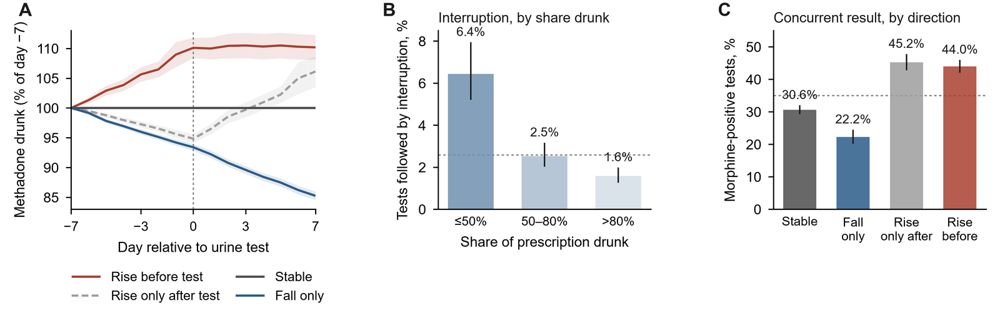
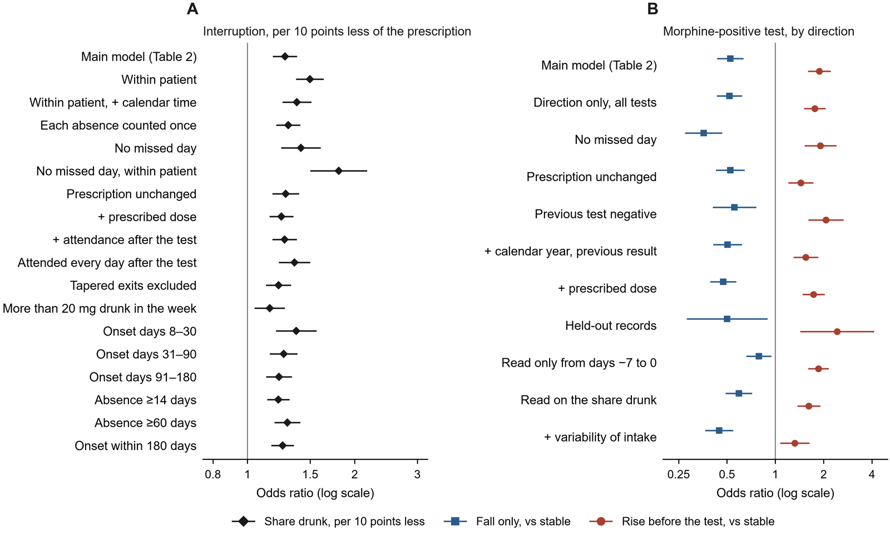

Behavioural data science · retrospective cohort study · Draft · manuscript prepared for Addiction (not yet submitted)
Where every methadone dose is drunk at the window under observation, the prescription is only a ceiling, and how much of it a patient drinks is a daily record of the patient's own behaviour. In 9,695 randomly scheduled urine tests from 552 patients, drinking less of the prescription preceded interruption of treatment, and a rise in the amount drunk before a test accompanied a morphine-positive result. These are associations in one programme, not causes and not a prediction tool.
Mu-Hua Wang · National Yang Ming Chiao Tung University · first author, with Tso-Jeng Wang (corresponding author)

Drinking less of the prescription precedes interruption; the direction of change marks the concurrent result. Middle panel: interruption followed 6.4% of tests after a week in which the patient drank half the prescription or less (80 of 1,242), 2.5% after 50–80% and 1.6% after a week above 80% (72 of 4,553). Bars are 95% Wilson confidence intervals.
The programme records the prescribed dose and the dose actually drunk on every day of attendance; the prescription let patients drink as little as 1 mg in 99.7% of daily records, so the amount drunk is the patient's own choice. Treatment interruption is an absence of at least 30 days beginning 8–90 days after a test: 251 of 8,990 tests with complete follow-up (2.8%) were followed by one, in 144 distinct absences, and 55.6% of these absences ended with a return to treatment.
per 10 percentage points less of the prescription drunk; 95% CI 1.18–1.38; 8,683 tests
95% CI 1.37–1.64; each patient's tests compared with that patient's other tests
rise in intake before the test vs stable intake, within patients; 95% CI 1.60–2.21; 8,040 tests
The interruption association holds when each absence is counted once (1.30), for interruptions that begin 91–180 days after the test (1.23), and, weaker but present, after excluding tests in which 20 mg or less was drunk that week (1.15). Adding the share drunk to attendance and test history raised the cross-validated AUC for interruption from 0.622 to 0.726.
For the concurrent urine result, a fall only had lower odds of a positive test than stable intake (0.52, 95% CI 0.43–0.63). The rise before the test held when the direction was read only from the week before the test (1.86) and when it was read on the share drunk, which removes prescription changes (1.62); heterogeneity across years was not detected (P = 0.36).
The daily amount is noisy and its size depends on the prescription, so the record is read in two ways that do not. The share drunk is the dose drunk divided by the dose prescribed, averaged over the attended days of the week before the test (the dosage gap of the study protocol). The direction comes from the signs of the highest three-day slopes of the dose drunk before and after the test: stable, a rise before the test, a rise only after it, or a fall only. This rule summarises a 17-group classification I built in MATLAB for this programme and agrees with it for 99.4% of classified tests, without the classification's hand-set boundaries.
| Within-patient odds ratio (95% CI), vs stable intake | Interruption | Positive test |
|---|---|---|
| Share drunk, per 10 points less | 1.50 (1.37–1.64) | – |
| Rise before the test | – | 1.88 (1.60–2.21) |
| Fall only | 1.58 (1.00–2.51) | 0.52 (0.43–0.63) |
| Rise only after the test | – | 1.40 (1.17–1.68) |
Both exposures are in each model. Interruption: conditional logistic regression within patients, adjusted for attendance and the current result. Positive test: conditional logistic regression with the patient as stratum, adjusted for attendance. Cells marked – are reported in the manuscript but are not part of the claim.

Both associations hold across sensitivity analyses: tests with no missed day, an unchanged prescription, each absence counted once, onset windows up to 180 days, the direction read only before the test or on the share drunk, and records held out when the 17 groups were built.
The prescription is a ceiling; what a patient drinks below it is behaviour. Drinking less preceded interruption, and a rise before a test accompanied a positive result, so a negative urine test in a patient who drinks little is not a sign that treatment is going well.
Scope: one methadone programme in Taiwan, 2018–2022, and only patients on its list of those retained for at least two years, a selection related to the outcome; observational and exploratory, not pre-registered; associations, not causes.